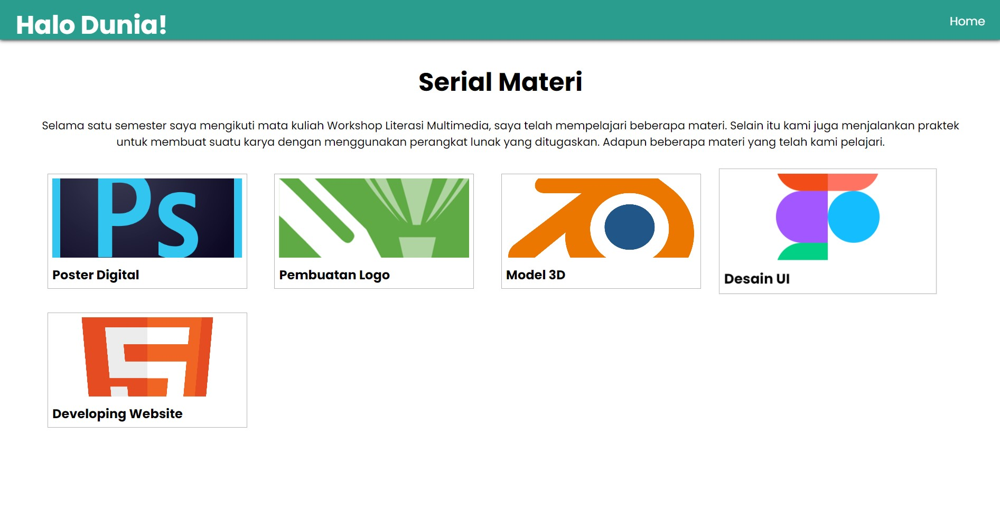
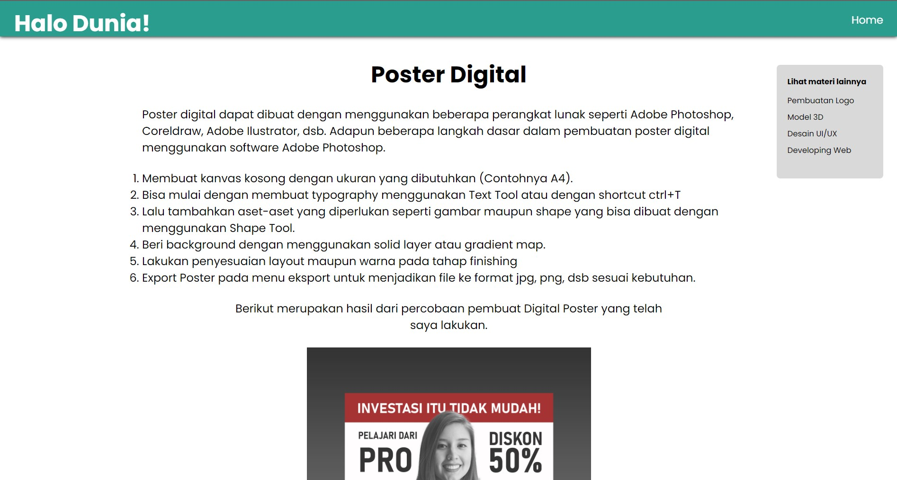

Developing Website
Di era ini hampir keseluruhan dari kita membutuhkan suatu website untuk berbgai kebutuhan baik oleh perusahaan, komunitas,instansi, bahkan pribadi. Ilmu tentang developing web saat ini sangat luas perkembangannya. Baik dari sisi Front-end maupun Back-end. Bahkan bahasa yang digunakan dalam pembuatannya juga sangat banyak, seperti Javascript, PHP, Pyhthon, Ruby, dan lain sebagainya. Tapi sebelum mempelajari berbagai bahasa pemrograman yang digunakan dalam membuat suatu website, alangkah baiknya bila kita memahami terlebih dahulu dasar fundamental dari pembuatan suatu website.
Hampir setiap website memiliki fondasi dasar dalam pembuataannya, dan disitulah html digunakan. Dimana sebelum suatu website dihias baik dari segi tampilan maupun animasi, diperlukan suatu kerangka yang berisi elemen-elemen yang diperlukan pada website.
- Langkah paling awal yang perlu dilakukan seorang developer adalah membuat file dokumen dengan format html
- Gunakan Code Editor seperti Notepad++, VisualStudio, Sublime Teks, dan lain sebagainya.
- Lalu mulai dengan format syntack html
- Isi format tersebut dengan elemen-elemen yang diperlukan
Setelah membuat rangkaian teks html, kita dapat menngatur tampilan layout dari website yang telah kita buat dengan menggunakan css. Sebelum mulai membuat kode, kita perlu menentukan metode yang akan digunakan, apakah menggunakan css inline, internal, atau eksternal.
Pada CSS inline, kita hanya perlu memasukkan kode css ke dalam elemen di html. Metode ini terkesan lebih mudah dan cepat, tapi kekurangan dari metode ini bisa jadi tampilan teks kode kita menjadi terlihat menumpuk dan lebih sulit untuk melakukan analisis bila terjadi kesalahan dalam penulisan kode dan lain sebagainya.
Kemudian kita bisa menggunakan CSS internal, dimana kita menuliskan kode CSS diluar elemen tapi tetap dalam satu file yang sama. Kita hanya perlu menuliskan elemen yang ingin kita ubah sebelum menuliskan kode pengaturan. Menggunakan metode menjadi teks kode kita menjadi terlihat lebih rapi dibanding dengan metode inline. Tetapi metode ini juga memiliki kekurangan dimana cenderung lebih kompleks ketika melakukan perbandingan dengan teks html. Dan teks kode pada satu file menjadi terlihat lebih panjang apalagi bila dipadukan dengan bahasa pemrograman lainnya.
Metode terakhir adalah CSS eksternal. Pada metode kita perlu membuat file khusus dengan format CSS yang kemudian kita hubungkan dengan file html yang telah kita buat. Proses ini terlihat lebih rumit, padahal metode ini adalah yang paling fleksibel dibanding kedua metode lainnya. Dimana kita bisa hanya perlu membuat satu file CSS dengan beberapa file/halaman html. Sehingga metode ini yang paling sering digunakan oleh para developer web.
Berikut merupakan hasil dari percobaan pembuat Digital Poster yang telah saya lakukan.
 Software in Use: Notepad++
Sekilas Tentang Software
Notepad++
by Don Ho
Notepad++ merupakan softwre teks editor yang mendukung sekitar 80 bahasa pemrograman. Berbeda dengan VS Code, software ini tidak memiliki plugin bawaan seperti Emmet yang paling sering digunakan oleh para developer untuk mempercepat proses koding. Sehingga perlu menginstall plugin secara mandiri.